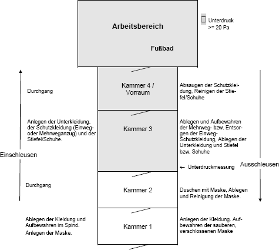
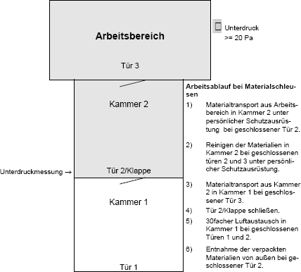

(1) Abbruch- und Sanierungsarbeiten an schwachgebundenen Asbestprodukten sind z. B.
Dabei sind Arbeitsweisen nach dem Stand der Technik anzuwenden, so dass möglichst wenig Asbestfasern freigesetzt werden.
(2) Die sicherheitstechnischen Maßnahmen müssen den nachfolgenden Anforderungen genügen. Ziel der Anforderungen ist es, in den Weißbereichen von Schleusen und der Umgebung des Arbeitsbereiches eine Asbestfaserkonzentration von 1000 F/m³ zu unterschreiten.
(3) Spritzasbest ist an der Anfallstelle mit geeigneten Bindemitteln so zu behandeln, dass eine Faserfreisetzung verhindert wird. Dies kann z. B. durch eine kombinierte Aufbereitungs- und Abfülltechnik in einem geschlossenen System erfolgen,
Kann nicht in einem geschlossenen Aufbereitungssystem gearbeitet werden, so ist der Raum für den Materialaustrag als Schwarzbereich mit Personen- und Materialschleuse auszuführen.
(4) Bei der Entfernung von Spritzasbest in größerem Umfang ist ein HochleistungsVakuum-Sauggerät einzusetzen, das einen Unterdruck von mindestens 35 kPa erzeugen kann und das aus Sammelbehälter, Haupt- und Sicherheitsfilter (Reinluftkonzentration < 1000 F/m³ gemäß Nummer 8.2 Absatz 2) sowie Pumpe möglichst in einem Block besteht.
(5) Asbestspritzputze und andere schwach gebundene asbesthaltige Materialien sollen in durchfeuchtetem Zustand unmittelbar von ihrer Unterkonstruktion abgesaugt oder abgenommen werden. Anfallendes asbesthaltiges Wasser darf nicht in die Kanalisation eingeleitet werden, sondern ist mit einem Hochleistungs-Vakuum-Sauggerät oder einem geeigneten Industriestaubsauger nach Anlage 7.1 aufzusaugen.
(6) Nicht absaugfähige asbesthaltige oder mit Asbest kontaminierte Materialien sind im Arbeitsbereich so aufzubereiten oder zu verpacken, dass eine Freisetzung von Asbestfasern beim Transport von der Anfallstelle zur Deponie oder zu einer zentralen Aufbereitungsanlage ausgeschlossen ist. Das Schreddern von asbesthaltigen Materialien ist nicht zulässig.
(7) Personen- und Materialschleusen sind arbeitstäglich sorgfältig feucht zu reinigen. In den Fällen, bei denen eine Feuchtreinigung nicht möglich ist, muss die Schleuse mit einem geeigneten Industriestaubsauger nach Anlage 7.1 sorgfältig abgesaugt werden.
(8) Kontrollmessungen im Weißbereich können erforderlich sein, z. B.
(9) Vom Arbeitsbereich nach außen muss eine Sprechverbindung vorhanden sein.
(1) Der Arbeitsbereich (Schwarzbereich) muss gegenüber der Umgebung nach dem Stand der Technik staubdicht abgetrennt sein (Abschottung). Die Abschottung muss standsicher sein und der Sogkraft des Unterdrucks und den sonstigen Beanspruchungen standhalten. Es sollen wieder verwendbare Abschottungen eingesetzt werden. Der Arbeitsbereich ist möglichst klein zu halten (siehe dazu auch Nummer 14.5). Abschottungen sind so zu errichten, dass keine Fasern freigesetzt werden. Es ist ein Abschottungsplan zu erstellen, der in den Grundzügen mit der Anzeige nach Nummer 3.2 vorzulegen ist. Bauseits installierte raumlufttechnische Anlagen sind in dieser Zeit außer Betrieb zu nehmen.
(2) Die zur Durchführung der Tätigkeiten zu installierenden raumlufttechnischen Anlagen haben folgende Kriterien zu erfüllen:
Darüber hinaus sind die Regelungen der ASR A 3.5 "Raumtemperatur" und der ASR A 3.6 "Lüftung" zu berücksichtigen.
(3) Der Luftaustausch ist ausreichend, wenn im Arbeitsbereich ein mindestens achtfacher Luftwechsel (Frischluft) pro Stunde erreicht wird. Die erforderliche Luftleistung ist aus der Nennleistung der raumlufttechnischen Anlage im Verhältnis zum Raumvolumen (ohne Einbauten) zu berechnen. Die Zuluft muss über definierte Zuluftöffnungen so geführt werden, dass eine wirkungsvolle Durchströmung des Arbeitsbereichs gegeben ist. Die Luftströmung ist z. B. mittels Rauchröhrchen zu überprüfen. Die Zuluftöffnungen müssen sich bei Druckabfall selbsttätig schließen.
(4) Der Unterdruck ist in der Regel ausreichend, wenn er während der Arbeiten 20 Pa (Pascal) gegenüber angrenzenden Räumen beträgt. Ein Unterdruck von 50 Pa soll nicht überschritten werden. Nach Schichtende ist die raumlufttechnische Anlage noch mindestens eine Stunde mit derselben Leistung weiter zu betreiben. Danach kann ein Unterdruck von 10 Pa genügen. Der Unterdruck ist kontinuierlich registrierend zu messen. Registrierstreifen sind mindestens bis zum vollständigen Abschluss der Maßnahme aufzubewahren.
(5) Bei Abfall des Unterdrucks muss automatisch optisch oder akustisch Alarm ausgelöst werden. Im Einzelfall kann der Anschluss der raumlufttechnischen Anlage an eine Notstromversorgung erforderlich sein.
(6) Die Notwendigkeit des Filterwechsels muss überwacht und optisch oder akustisch angezeigt werden.
(7) Raumlufttechnische Anlagen dürfen in der Regel nicht im Arbeitsbereich aufgestellt und Luftleitungen zwischen Schwebstofffilter und Sauggerät nicht durch den Arbeitsbereich geführt werden.
(1) Der Arbeitsbereich darf nur über ausreichend bemessene Personal-Dekontaminationsanlagen (Personenschleusen) betreten oder verlassen werden. Materialtransport durch die Personenschleuse ist unzulässig.
(2) In der Regel ist ein Mehrkammersystem, bestehend aus drei Kammern mit Vorraum oder vier Kammern im Baukastensystem oder als Festinstallation im Container, z. B. gemäß Abb. 1, vorzusehen mit den wesentlichen Anforderungen
Als Vorraum oder Kammer 4 kann zur Vorreinigung auch eine Luftdusche eingesetzt werden. Luftduschen dürfen an Stelle von Nassduschen nur eingesetzt werden, wenn sie behördlich oder berufsgenossenschaftlich zugelassen sind.

Abb. 1: Personenschleuse (Prinzipskizze)
(3) Eine Drei-Kammerschleuse ist ausreichend, wenn
(4) Befinden sich in der Nähe der Personenschleuse elektrische Betriebsmittel, so dass auf eine Nasszelle in der Schleuse verzichtet werden muss, so müssen die Beschäftigten in der Schleuse trocken abgesaugt werden und es muss in der Nähe eine Dusche zur Verfügung stehen.

Abb. 2: Materialschleuse (Prinzipskizze)
(1) Material-Dekontaminationsanlagen (Materialschleusen) sind so zu gestalten, dass Gegenstände und Materialien einwandfrei transportiert, gereinigt, verpackt und zwischengelagert werden können (Beispiel siehe Abb. 2). Wesentliche Anforderungen an die Materialschleuse sind
(2) Das Betreten und Verlassen des Arbeitsbereichs durch die Materialschleuse ist nicht zulässig.
(1) Arbeiten geringen Umfangs an schwach gebundenen Asbestprodukten nach Nummer 2.10 können z. B. sein
(2) Die Arbeitsbereiche sind staubdicht abzutrennen und mit einem Entlüftungsgerät für Unterdruckhaltung zu durchlüften. Nach Möglichkeit ist feucht zu arbeiten.
(3) Bei kleinen Arbeitsbereichen kann abweichend von Absatz 2 auch die alleinige Verwendung eines geeigneten Industriestaubsaugers/Entstaubers nach Anlage 7.1 (Verzicht auf zusätzliches Entlüftungsgerät) ausreichend sein, wenn das verwendete Gerät ständig in Betrieb ist und die Abluft nach außen geleitet wird. Dabei ist mindestens ein acht-facher Luftwechsel pro Stunde zu gewährleisten.
(4) In Innenräumen ist als Verbindung zum Arbeitsbereich im Allgemeinen eine EinKammer-Schleuse ausreichend. Personen und Gegenstände dürfen in diesem Fall den Arbeitsbereich nicht vor Abschluss der Tätigkeiten einschließlich der Reinigungsarbeiten und nachfolgendem 30-fachem Luftwechsel verlassen. Der Zugang ist während der Arbeit staubdicht geschlossen zu halten.
(5) Die Abschottung darf erst nach visueller Kontrolle des Reinigungszustandes abgebaut werden.
(6) Auf eine Freigabemessung nach Nummer 14.5 kann in der Regel verzichtet werden.
(7) Bei Arbeiten geringen Umfangs muss vor Ort eine Waschgelegenheit vorhanden sein.
(1) Der Arbeitgeber darf die festgelegten Schutzmaßnahmen erst aufheben, wenn
(2) Ist eine Freimessung vorgesehen, ist darauf zu achten, dass die Größe des Arbeitsraumes ausreichend dimensioniert ist, um eine Raumluftmessung gemäß den Vorgaben der VDI 3492 durchführen zu können.
(3) Das Messergebnis kann ggf. zur Erfolgskontrolle nach Asbestrichtlinien der Länder verwendet werden.